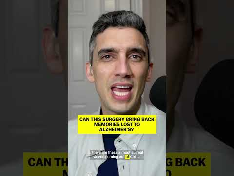
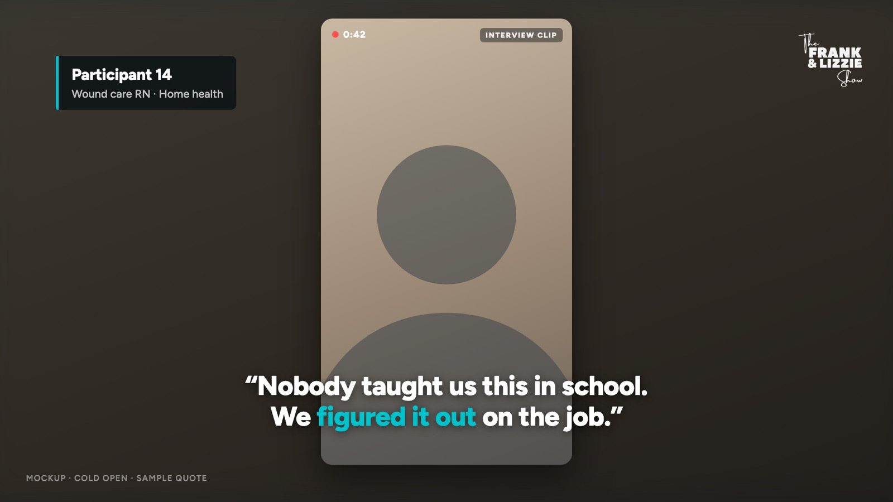
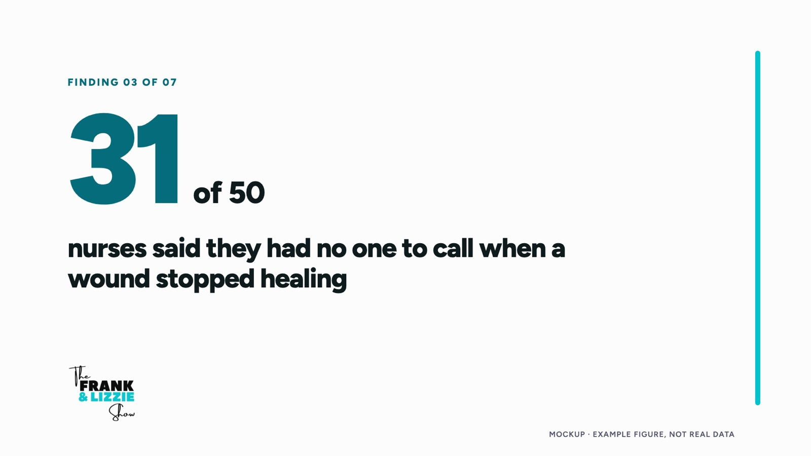
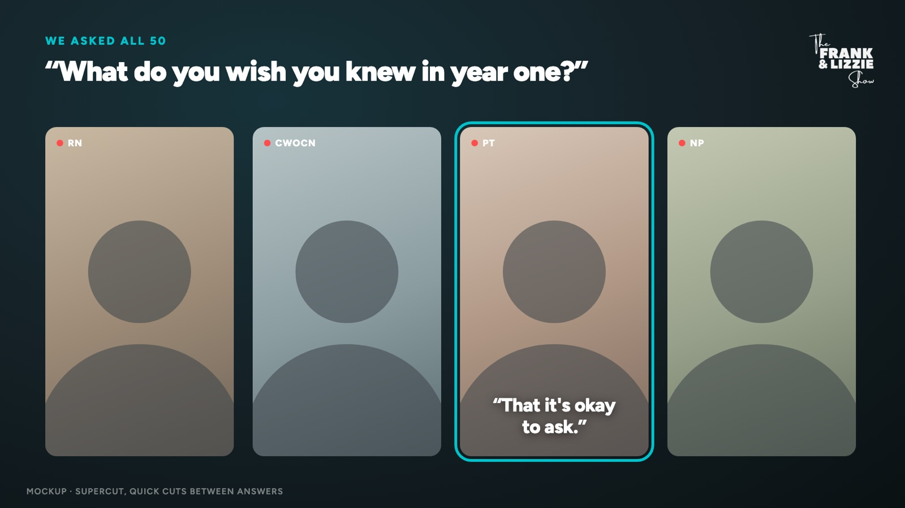
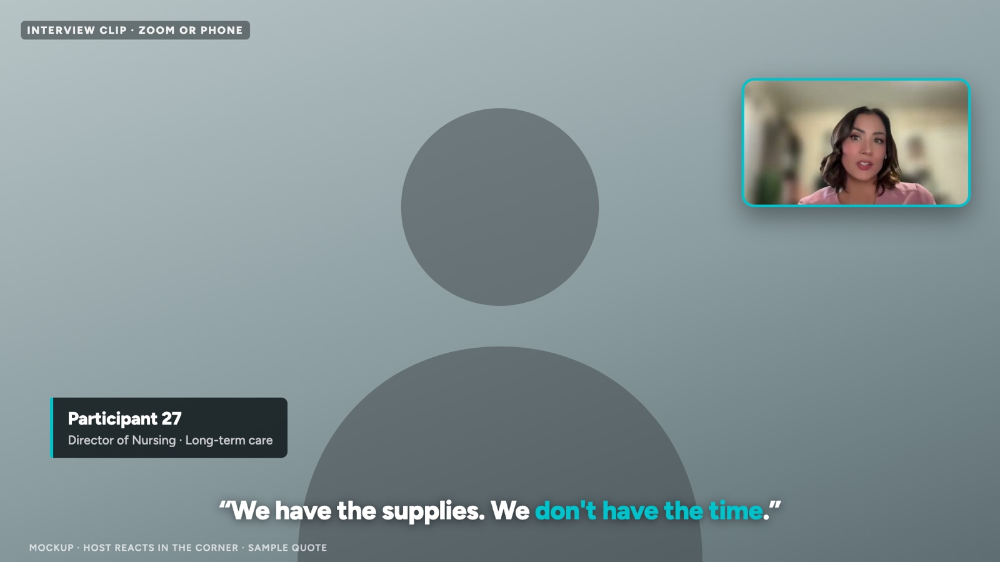
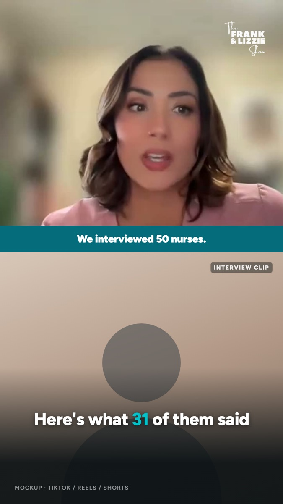
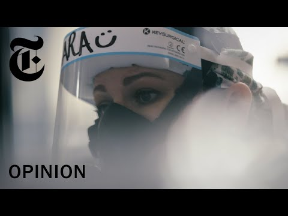
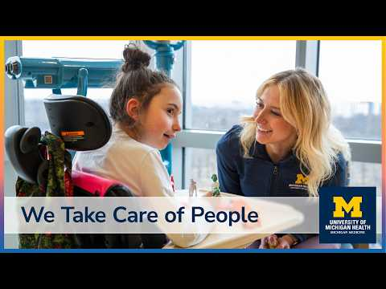
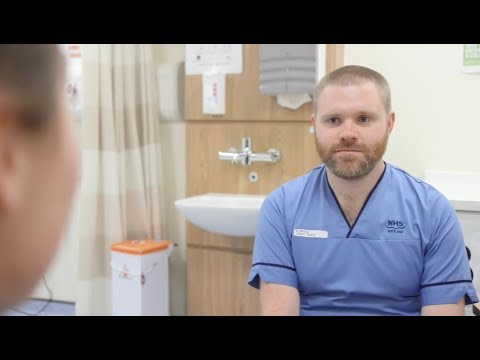

Vox, “Can this surgery bring back memories lost to Alzheimer’s?” 248K views on TikTok in its first week.
Why this Vox video works
It is mostly raw phone footage and one host talking. No studio, no B-roll shoot. Three moves carry it:
- Open on the real people. The first seconds are the phone clips themselves, so you meet the subject before the host says a word.
- The host explains why it matters. Short, direct, to camera. Then back to a clip to prove the point.
- Captions do the heavy lifting. Big burned-in words make it work with the sound off.
A few shots, repeated through the video
Every finding is built from the same handful of shots, so editing stays fast and the video still feels varied. Interview clips are shown as placeholders; the real ones go in once Frank and Lizzie pick them.





All quotes, numbers and roles in these frames are placeholders to show the layout. The real ones come from Frank and Lizzie’s research.
Run of show for the full YouTube video
About 20 to 30 minutes, with a YouTube chapter for each finding so viewers can jump to what they care about.
| Time | Segment | What’s on screen |
|---|---|---|
| 0:00 | Cold open | Two or three of the most striking interview lines, back to back. No logo yet. |
| 0:45 | Why we did this | Frank and Lizzie: who they talked to, how many, and the question that started it. Disclaimer card. |
| 3:00 | Finding 1 to 7 | Each one repeats: finding card, hosts set it up, 2 to 4 interview clips, a supercut when it fits, hosts’ takeaway. About 3 minutes each. |
| 24:00 | What it means for you | Hosts speak to the wound care nurse watching: what to do with this. |
| 27:00 | Close | One last interview line, then the end card and resource link. |
Interviews recorded on phones and video calls
None of these needed a film crew. Each one shows a piece of the format.

Inside a Covid I.C.U., Through a Nurse’s Eyes
A nurse’s own phone footage carries the whole piece. Proof that self-recorded video can feel cinematic.

We Take Care of People: Real Nurse Stories
Many nurses, one theme, cut together. Close to how a single finding would play.

7 Things I Wish I’d Known Before I Was a Mental Health Nurse
One question asked to many people, organized into numbered points. The supercut idea in practice.
Nurses Grieve Too
A documentary built from qualitative research interviews with nurses. The closest match to a research-findings video.
Four things from Frank and Lizzie
1. The findings list
5 to 7 headline findings, each with the number behind it (for example “31 of 50”). This becomes the chapter list.
2. Clip picks
For each finding, the interviews and rough timestamps you want to use. A simple spreadsheet is enough.
3. One host conversation
A 45 to 60 minute recorded talk-through of the findings, on Zoom with “separate audio file for each participant” turned on.
4. Original files and consent
The original phone or Zoom files (not screen recordings), plus each person’s OK to appear publicly. No patient details on screen.